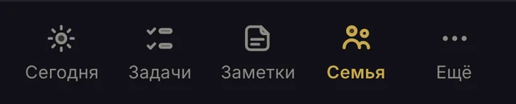
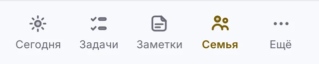
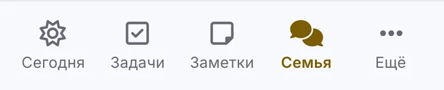
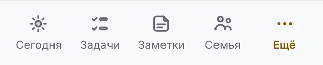
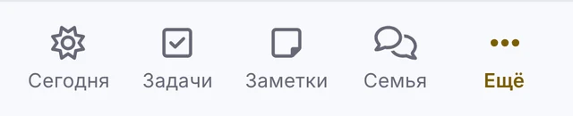

Сейчас, тёмная
Как у Abacus, тёмная
Сейчас, светлая
Как у Abacus, светлая
Активна «Сегодня»
Активны «Задачи»
Активны «Заметки»
Активна «Семья»



Активно «Ещё»


На 320 вкладка 61 px шириной: облачка «Семьи» (24 px) помещаются с запасом, подписи не режутся ни в одном варианте.